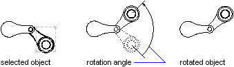

Autodesk AutoCAD 2021: ActiveX Developer's Guide > Create and Edit AutoCAD Entities > About Modifying Objects (VBA/ActiveX) >
You can rotate all drawing objects and attribute reference objects.
To rotate an object, use the Rotate method provided for that object. This method requires as input a base point and a rotation angle. The base point is a variant array with three doubles. These doubles represent a 3D WCS coordinate specifying the point through which the axis of rotation is defined. The angle of rotation is specified in radians. This angle determines how far an object rotates around the base point relative to its current location.

This example creates a closed lightweight polyline, and then rotates the polyline 45 degrees about the base point (4, 4.25, 0).
Sub Ch4_RotatePolyline() ' Create the polyline Dim plineObj As AcadLWPolyline Dim points(0 To 11) As Double points(0) = 1: points(1) = 2 points(2) = 1: points(3) = 3 points(4) = 2: points(5) = 3 points(6) = 3: points(7) = 3 points(8) = 4: points(9) = 4 points(10) = 4: points(11) = 2 Set plineObj = ThisDrawing.ModelSpace.AddLightWeightPolyline(points) plineObj.Closed = True ZoomAll ' Define the rotation of 45 degrees about a ' base point of (4, 4.25, 0) Dim basePoint(0 To 2) As Double Dim rotationAngle As Double basePoint(0) = 4: basePoint(1) = 4.25: basePoint(2) = 0 rotationAngle = 0.7853981 ' 45 degrees ' Rotate the polyline plineObj.Rotate basePoint, rotationAngle plineObj.Update End Sub